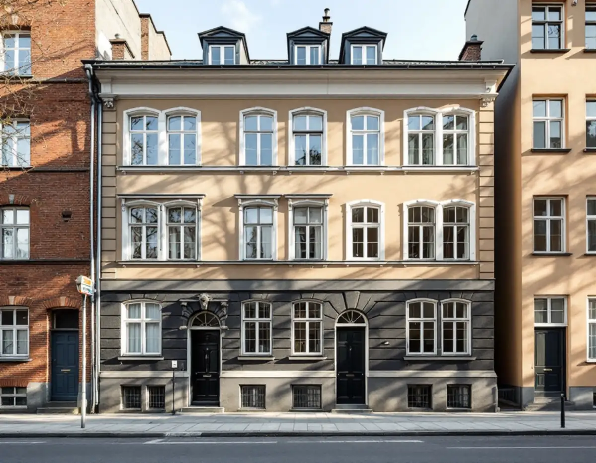
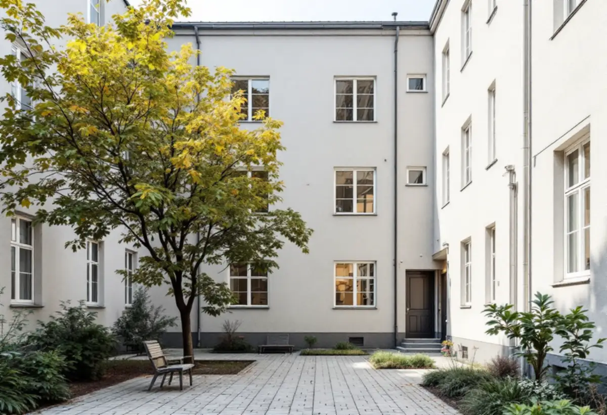
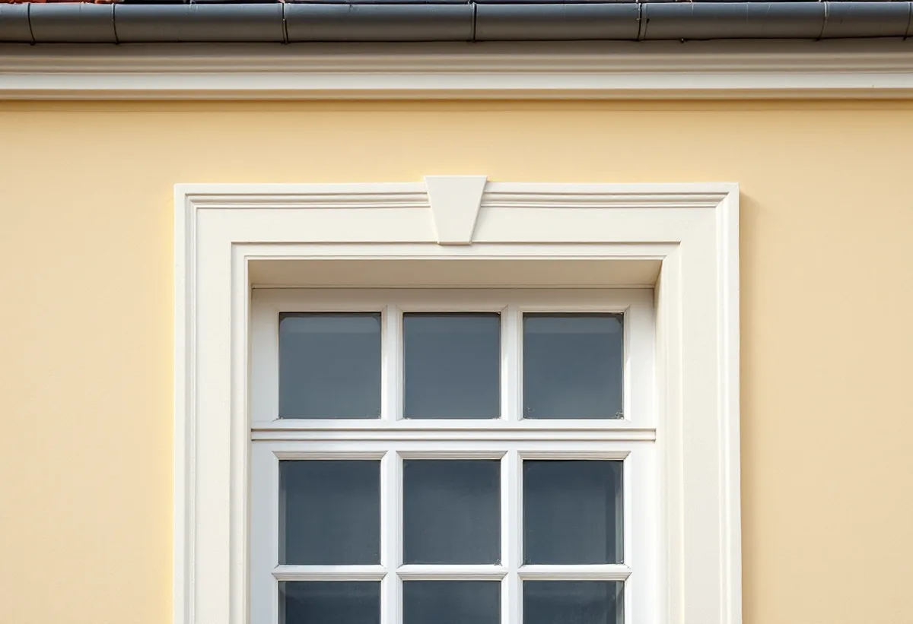

Platsbesök
Gratis besök på gatan och gården med styrelsen.
Ett stenhus i Vasastan har två slags fasader: en påkostad mot gatan och en enklare mot gården. De målas ofta olika och lyder under olika regler. Geal Entreprenad AB målar fasader på flerbostadshus och tar fram underlaget till styrelsen.

Stadens redovisning av riksintressena beskriver den klassiska stenstaden som en tät kvartersstad med bebyggelse från 1870–1930, utbredd över bland annat Norrmalm där Vasastaden ingår. Bland de värdebärande dragen nämns gatufasadernas tydliga uppdelning i sockelvåning och huvudfasad, oftast med markerad takfot, och enklare gårdsfasader.
För en fasadmålning betyder det att gatufasadens indelning ska synas även efter målningen. Sockelvåningen, listerna och omfattningarna kring fönster och portar har ofta egna kulörer, och de målas för sig. Stadens redovisning nämner också byggnadsdetaljering som ett värdebärande drag. I norra Vasastaden ligger dessutom kvarteren Motorn och Vingen, uppförda i slutet av 1910-talet som ett tidigt exempel på kooperativt byggande med kommunalt stöd, där bebyggelsen med gårdar och allmänna platser enligt staden har stort kulturvärde att bevara.

Stockholms stad skriver att det för flerbostadshus krävs bygglov när kulör eller material ändras på en fasad som vetter mot allmän plats. Mot gården kan en fasadändring göras utan bygglov om vissa förutsättningar är uppfyllda. Men inom ett riksintresse för kulturmiljövården, i ett särskilt värdefullt område eller på blå- och grönklassade hus krävs bygglov även där.
I praktiken målar vi ofta gårdsfasaderna i samma kulör som tidigare, och då är det underhåll. Vill föreningen ljusa upp en mörk gård med en ny kulör går vi först igenom husets klassning och om bygglov behövs.
Stadsmuseets klassificeringskarta visar riksintressen med blå ring, särskilt värdefulla områden med grön ring och klassade hus i blått, grönt, gult och grått. Staden skriver att byggherren själv ansvarar för att ta reda på vad som gäller för fastigheten och hänvisar till Stadsmuseet för rådgivning och bedömning.
Är huset streckat i kartan är miljön inte inventerad, och då kan bygglov ändå krävas. Vi slår upp fastigheten innan vi föreslår kulörer, så att föreningen vet om lovet ska in i tidplanen.
Stadens områdesfakta för 2025 räknar i församlingsområdena Gustav Vasa, Västra Matteus och Östra Matteus drygt 20 000 bostadsrätter i flerbostadshus och omkring 6 500 lägenheter hos privata hyresvärdar. Fasaden är en gemensam del av huset, och målningen beställs av föreningen eller hyresvärden.
Vi lämnar ett underlag som styrelsen kan ta till stämman: vilka fasader som ska målas, färgtyp, kulör, ställning mot gata och gård och om bygglov behövs.
Stockholms stad skriver att en byggställning på offentlig plats kräver polistillstånd, och att tillståndet ska vara utfärdat innan platsen används. Minst 1,6 meter ska vara fritt under ställningen, eller minst 2 meter av gångbanan ska finnas kvar för gående. Upplag för ställningsmaterial ska ingå i tillståndet.
I Vasastans gator står gatufasaden direkt mot trottoaren, så ställningen och dess tillstånd blir en del av tidplanen. Gårdsfasaderna kan ofta målas från ställning eller lift på gården utan tillstånd för gatan.

Gratis besök på gatan och gården med styrelsen.
Stadsmuseets karta och lovfrågan.
Kulörer för sockel, huvudfasad och detaljer.
Ställning och polistillstånd mot gatan.
Rengöring, lagning och grundning.
Huvudfasad, detaljer och gårdsfasader.
Rotavdrag ges i en bostadsrätt bara för arbete inne i bostaden som bostadsrättshavaren ansvarar för enligt stadgarna. Fasader och tak är gemensamma delar, och en fasadmålning på ett flerbostadshus ger därför inget avdrag.
Kostnadsförslaget ställs till föreningen eller fastighetsägaren. Äger du en villa gäller andra regler: där kan målning av fasaden ge rotavdrag på arbetskostnaden.
Fasadernas yta och höjd, antalet detaljer och kulörer, putsens skick, ställning mot gata och gård och om bygglov behövs. Efter ett gratis platsbesök får föreningen ett skriftligt kostnadsförslag.
Fasad, fönster och invändig målning.
Målare i Stockholm →Takbyte, takbesiktning och plåtarbeten.
Takläggare i Vasastan →Stenstad, Röda Bergen och föreningarnas tak.
Takrenovering i Vasastan →Flytta badrummet, ny stam och frånluft.
Badrumsrenovering i Vasastan →När en lokal blir bostad.
Byggföretag i Vasastan →Ställning, tillstånd och etablering på gatan.
Fasadrenovering i Vasastan →Storgårdskvarteren och 20-talets fönster.
Fönsterbyte i Vasastan →Fönster i Birkastadens jugendhus.
Fönsterrenovering i Vasastan →Springor, kupning och underhåll.
Golvläggare i Vasastan →Stav- och fiskbensparkett.
Golvslipning i Vasastan →Kokvrån som blir kök.
Köksrenovering i Vasastan →Snickerier, fönster och sprucket spackel.
Målare i Vasastan →Takfönster, vindar och plåt.
Plåtslagare i Vasastan →Öppna upp, nya dörröppningar och listverk.
Snickare i Vasastan →Takbyte för föreningar och fastighetsägare.
Takbyte i Vasastan →Ny tapet på gamla putsväggar.
Tapetsering i Vasastan →Hela lägenheten, med husets värden kvar.
Totalrenovering i Vasastan →